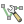

Environment¶
Virtual Machine (VM) Access¶
All work is done on a personalized VM on the StatCan cloud environment. Your VM is named according to the format:
egp-<username>. See the following instructions for accessing your VM:
Download PDF
Software¶
All software dependencies are pre-installed. All you need is the following:
Data Editing¶
QGIS: Open source GIS application.
Repository Management and Script Usage¶
Git: Version control system for tracking code changes and collaborative development.
conda: Virtual environment and package manager.
conda setup
conda installation may require the following additions to the Path environment variable in order for
conda to be recognized as a valid command:
C:\ProgramData\Anaconda3
C:\ProgramData\Anaconda3\Library\bin
C:\ProgramData\Anaconda3\Scripts
Repository¶
The repository is the root directory containing all files and code for a project. This project’s repository is named
egp-crn and is already installed on your VM at C:/egp-crn.
Git is used for repository management. Git allows you to fetch content from a remote repository (GitHub in this
case) and integrate the differences into your local repository.
Installation¶
Change directory to the desired installation location:
cd /d C:/
Install the repository:
git clone https://github.com/StatCan/egp-crn.git
Updates¶
Change directory to the repository root:
cd /d C:/egp-crn
Fetch and integrate updates:
git pull
Virtual Environment¶
All scripts within the egp-crn repository are intended to be executed within a conda virtual environment. The
conda environment is defined within an environment.yml file within the egp-crn repository and is already
installed on your VM.
conda is an environment and package manager and is used by the egp-crn repository to provide an isolated
processing environment and effective dependency management. The conda environment must be activated before
executing any scripts in order to make use of the contained dependencies.
Installation¶
Install the conda environment via:
conda env create -f C:/egp-crn/environment.yml
Activation¶
Activate the conda environment via:
conda activate egp-crn
Updates¶
Update the conda environment via (only required if dependencies change):
conda env update -f C:/egp-crn/environment.yml --prune
Scripts¶
All scripts within the egp-crn repository are implemented as CLI tools and can be called from any shell. The
specific parameters and details of each CLI tool can be viewed by passing the keyword --help.
Script usage:
Activate the
condaenvironment:conda activate egp-crn
Change directory to the script location:
cd /d C:/egp-crn/src/topology
Execute the script CLI:
Regular execution example:
python validate_topology.py bcExecution to view parameter details:
python validate_topology.py --help
Figure: Script CLI execution demo.¶
QGIS¶
Basic Editing Actions¶
Enable / Disable Editing¶
 Enable editing.
Enable editing. Select arc(s) and perform edits.
Select arc(s) and perform edits. Save edits.
Save edits.- Disable editing.
Enable Snapping¶
 Enable snapping.
Enable snapping. Open snapping options → Advanced Configuration.
Check box to enable snapping for specific layers.
Enable vertex snapping for specific layers: Type → Vertex.
Enable Snapping on Intersection.
Add / Move / Delete Vertex¶
 With editing enabled, open vertex editor.
With editing enabled, open vertex editor.Right-click arc to display vertices in vertex editor.
Edit vertices:
Add: Hover over arc and click plus (+) icon, click again at desired location to place vertex.
Move: Click a vertex and click again at desired location to place vertex.
Delete: Select vertex (clicking and drag cursor or select from vertex editor) and press <Delete> key.
QGIS Editing Demo¶
Updating Layer Sources¶
QGIS project files (.qgz) are part of the repository and, therefore, modifications will be included with any
git pull that you perform.
- Problem:
Your data sources will be overwritten by those being used when the modifications were made.
- Solution:
For each layer, right-click → Change Data Source…
Figure: QGIS - Updating layer sources.¶
Keyboard Shortcuts (Hotkeys)¶
Hotkeys are recommended to make editing activities less tedious and can be assigned to individual QGIS actions via: Settings → Keyboard Shortcuts… → Search / select action → Change → Press desired keyboard key.
Figure: QGIS - Assigning hotkeys.¶